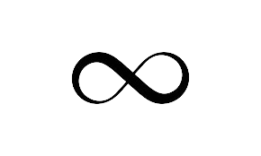
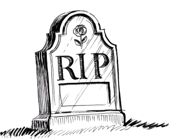

La eternidad y la mortalidad son conceptos fundamentales en el ámbito de las humanidades, especialmente en filosofía y literatura.
Estos términos se entrelazan en la exploración de la condición humana, el significado de la vida y la búsqueda de un legado que trascienda la existencia individual.
“Una filosofía de la humanidad se distingue de una filosofía del hombre por su insistencia en el hecho de que no es un Hombre, hablándose a sí mismo en diálogo solitario, sino los hombres hablándose y comunicándose entre sí, los que habitan la tierra.”
¿Qué es la eternidad?
La eternidad se refiere a la idea de un estado que no está marcado ni limitado por el tiempo. Es un concepto que abarca lo inmutable, lo infinito, lo que no está sujeto a los ciclos de la vida y la muerte. Mientras que la inmortalidad se entiende como la capacidad de no morir, la eternidad se refiere a lo que trasciende el tiempo mismo. Es una existencia atemporal, que no puede ser comprendida completamente dentro de los límites de la experiencia humana.
Este concepto es central en muchas filosofías y religiones, ya que ofrece una idea de trascendencia que no depende de la perpetuidad del cuerpo o de la vida individual. Para muchos pensadores, lo eterno está más allá de la percepción humana y solo se puede alcanzar a través de la contemplación o la reflexión filosófica profunda.

¿Qué es la mortalidad?
La mortalidad, en contraste, es la condición que define la vida humana desde una perspectiva biológica y existencial. Es la inevitabilidad de la muerte, el reconocimiento de nuestra finitud, lo que da forma a nuestra experiencia de la vida. Hannah Arendt, en su obra, aborda la mortalidad como una característica central de la existencia humana. En su visión, la mortalidad no solo se refiere al hecho físico de la muerte, sino también a nuestra conciencia de ella, que influye profundamente en nuestra forma de vivir.

La Trascendencia: La inmortalidad a través de las obras
La tensión entre mortalidad y eternidad también se manifiesta en el deseo humano de inmortalidad. A diferencia de la eternidad, que es una característica de lo trascendente y lo divino, la inmortalidad humana a menudo se interpreta como la posibilidad de dejar un legado que persista más allá de la muerte. Para Arendt, la creación humana, entendida como una acción significativa en el mundo, permite a los seres humanos alcanzar una suerte de "inmortalidad" simbólica. Al actuar en el mundo, al dejar nuestras huellas en él, podemos lograr una trascendencia, en la que nuestras ideas y obras continúan resonando en las generaciones futuras, incluso si nuestra vida física ha llegado a su fin.
Este tipo de inmortalidad no se refiere a la perpetuidad del cuerpo, sino a la preservación de nuestra contribución al mundo. Es un tipo de "eternidad" que se construye a través de la acción, el pensamiento y el arte, que persiste en el tiempo no por su naturaleza física, sino por su capacidad de influir y transformar a otros.